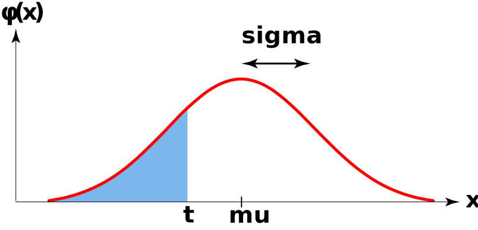

import scipy.stats as spsDistributions in Python
If you recall, one of the first things we did in Lab (back in Week 1!) was to use Python as a calculator. At the time, we only used Python to compute relatively simple quantities. Now that we’ve talked a bit about distributions, you can see how Python might be able to simpliy our lives greatly!
For instance, take the probability mass function (p.m.f.) of the \(\mathrm{Bin}(n, p)\) distribution: if \(X \sim \mathrm{Bin}(n, p)\), then \[ \mathbb{P}(X = k) = \binom{n}{k} \cdot p^k \cdot (1 - p)^{n - k} \] Can we get Python to compute this for us? Or, remember how when we want to find areas under a normal density curve we have to use tables- can we perhaps compute these areas using Python?
The answer to both of these questions is, naturally, “yes”! Specifically, we will make use of the scipy.stats module which contains a plethora of functions relating to the distributions we learned in this class (as well as other distributions we won’t have time to cover).
Let’s tackle the Binomial distribution first. The function sps.binom.pmf() allows us to compute the p.m.f. of the Binomial distribution (with specified parameters) at a particular point.
Task 1
Let \(X \sim \mathrm{Bin}(143, 0.153)\). Compute the following using the sps.binom.pmf() function:
- \(\mathbb{P}(X = 20)\)
- \(\mathbb{P}(X = 40)\) [make sure you understand the output of this; feel free to ask your TA if you are confused!]
Now, let’s talk about areas under the normal curve. If we want to find the following area:

we would run the following code:
sps.norm.cdf(t, mu, sigma)
Task 2
- If \(X \sim \mathcal{N}(3, 0.5)\), compute \(\mathbb{P}(X \leq 2)\).
- If \(X \sim \mathcal{N}(-2, \ 1)\), compute \(\mathbb{P}(X \geq 1)\).
- If \(X \sim \mathcal{N}(0, 1)\), compute \(\mathbb{P}(-1 \leq X \leq 1)\).
Task 3
Look up how to compute the c.d.f. of the Uniform distribution.
If \(X \sim \mathrm{Unif}(-1, \ 1)\), use Python to compute \(\mathbb{P}(X \leq 0.1532)\).
Percentiles
As we have seen in lecture, confidence intervals for a population parameter \(\theta\) take the form \[ \widehat{\theta} \pm c \cdot \mathrm{s.e.} \] where \(\mathrm{s.e.}\) denotes the standard error (i.e. standard deviation) of the point estimator \(\widehat{\Theta}\), and \(c\) is an appropriately-selected percentile from the distribution of \(\widehat{\Theta}\).
Up until now, we have primarily been finding the constant \(c\) using the various tables at our disposal. Though being able to read these tables is a useful skill (and a skill that is potentially testable on quizzes and exams…), using computers to compute these percentiles can greatly increase efficiency.
The syntax
scipy.stats.norm.ppf(p, m, s)computes the pth percentile of the \(\mathcal{N}\)(m, s) distribution. We will revisit this fairly soon, once we are exposed to another continuous distribution in a few lectures. There are analagous functions that allow us to compute percentiles of other distributions; for example, scipy.stats.t.ppf() can be used to find the percentiles of the \(t\) distribution.
Task 4
Use Python to find the confidence coefficient of a 95% confidence interval for a population proportion.
Use Python to find the confidence coefficient of an 82% confidence interval for a population proportion.
Simulation
Now, let’s tie things together slightly. As data scientists, we obviously love to use data! However, sometimes data can be too time-consuming, costly, or otherwise unfeasible to collect in large quantities. In certain situations, simulations can help address these issues.
When asked to define a “simulation” in the context of data science, ChatGPT returned the following:
[…] a simulation is a computational model or program that is used to replicate real-world scenarios or systems in order to analyze their behavior, predict outcomes, or test hypotheses.
This is actually a great definition: simulations are designed to simulate (i.e. mimic) real-world situations to generate new observations/outcomes that (we hope) closely resemble the real-world outcomes.
For example, suppose we believe that weights of rats in a particular situation are normally distributed with mean 3.8oz and a standard deviation of 0.5oz. Instead of actually going out and collecting the weights of, say, 10 different rats and recording them, we could simulate collecting these weights by generating a series of random numbers that follow the \(\mathcal{N}(3.8, \ 0.5)\) distribution:
array([3.2571847 , 4.29867272, 3.94148925, 3.04685264, 3.51069987,
4.62571827, 2.58666038, 3.58554369, 4.43296813, 3.3666298 ])There are (once again) several modules that contain functions designed to simulate draws from different distributions: for now, we’ll stick with the scipy.stats module.
To simulate n draws from a \(\mathcal{N}(\)mu, sigma\()\) distribution we use the code
sps.norm.rvs(mu, sigma, n)(note that, by default, the sample size comes at the end!) To simulate n draws from a \(\mathrm{Unif}(\)a, b\()\) distribution we use the code
sps.uniform.rvs(a, b, n)
Task 5
The time spent waiting in line at Romaine’s is uniformly distributed between 2 mins and 10 mins. Simulate the process of waiting in line at Romaine’s one hundred times; store your result in a variable called
xand us the commandx[0:11]to display only the first 10 elements ofx. (Aside: See if you can understand the syntax used here!)The temperature of a healthy adult is normally distributed with mean 98.2 degrees Fahrenheit and standard deviation 2.4 degrees Fahrenheit. Simulate the process of selecting 150 healthy adults and recording their temperatures (in degrees Fahrenheit); store your result in a variable called
yand display only the first 10 elements ofy. (Hint: Remember how to index variables!)
How might we simulate the experiment of picking \(k\) numbers from a specified set? There are several different ways to do this in Python- the way we will do this is the same way we conducted this experiment during the Lecture 11 demo, using the np.random.choice() function.
Task 6
Import the numpy.random module with the nickname npr. Simulate the experiment of rolling a fair six-sided die 10 times and recording the outcome of each roll. Think about how you can translate this experiment into an experiment consisting of drawing numbers at random from a set of specified numbers.
Setting the Seed
Now, when it comes to simulations, there is a very important concept known as setting a seed.
Task 7
Write
npr.choice([1, 2, 3], size = 4)in a code cell, and run it three times. In a Markdown cell just below this cell, answer the following question: did you get the same result each time you ran the code cell?In a new code cell write
npr.seed(15)
npr.choice([1, 2, 3], size = 4)Run this new cell three times and again answer the question: did you get the same result each time you ran the code cell?
- Now, turn to your neighbor and check whether you both got the same result as each other when completing task (b) above?
As you can see, setting a seed, in a sense, removes a certain amount of randomness in Python. After you set a seed, your random number generator will generate the same number (or set of numbers) every time you run it. Though it may seem unclear as to why we would want this, you may be able to imagine that setting the seed is extremely important when it comes to replicability, a concept we will return to later in the course.
Introduction to Loops
Suppose we have the following outcomes of an experiment:
x = ['success', 'failure', 'failure', 'success', 'failure', 'failure', 'failure', 'success']How might we write code to count the number of successes in this string of outcomes? There are several different ways to accomplish this: one involves what is known as a for loop.

Here’s the general idea: we would like to perform an element-wise comparison; that is, we would like to iteratively check whether each element of x is a success or a failure. The “brute-force” way would be to check each element individually, using comparisons:
x[0] == 'success'Truex[1] == 'success'Falsex[2] == 'success'FalseAs you can imagine, though, this would get incredibly tedious, especially if x were large! This is where for loops become useful: they allow us to automate this iterative process.
Before returning to this success/failure problem, let’s look at an example to see how for loops work.
for fruit in ['apple', 'banana', 'pear']:
print(fruit)apple
banana
pearHere are how the different components work:
- The
forkeyword signifies the beginning of theforloop. - The name
fruitis the variable. - The list following the
inkeyword contains all of the different values the variable will take during the execution of the for loop. - The code after the initial colon
:is called the body of the loop. (Note that the body of a for loop must be indented properly!) Here is how the body is executed:- First, the variable
fruitis assigned the first value in the list of possible values specified in the first line of the loop - Then, after assigning
fruitthis value, the code in the body is executed once. - Next, the variable
fruitis assigned the second value of the list of values, and the body is run again. - This continues until the list of all possible values is exhausted.
- First, the variable
Sometimes, it may be useful to sketch a diagram/table to keep track of the code at each iteration of the loop:
| FIRST ITERATION | |
| Start of Iteration |
|
| End of Iteration |
|
| SECOND ITERATION | |
| Start of Iteration |
|
| End of Iteration |
|
| THIRD ITERATION | |
| Start of Iteration |
|
| End of Iteration |
|
It may seem strange to keep track of the values of the variables at the end of each iteration. The reason we do so is because sometimes the body of the loop will actually change the value of a variable! For example, consider the code
for n in [1, 2, 3]:
n += 2
print(n)3
4
5the associated diagram would look like
| FIRST ITERATION | |
| Start of Iteration |
|
| End of Iteration |
|
| SECOND ITERATION | |
| Start of Iteration |
|
| End of Iteration |
|
| THIRD ITERATION | |
| Start of Iteration |
|
| End of Iteration |
|
By the way, notice the shorthand notation += that was used above:
Tip
The code x += y is equivalent to x = x + y.
Finally, one thing that should be mentioned is that you can call the variable in a loop whatever you like!
for yummy in ['apple', 'banana', 'pear']:
print(yummy)apple
banana
pear
Task 8
Copy-paste the code
x = ['success', 'failure', 'failure', 'success', 'failure', 'failure', 'failure', 'success']into a cell, and run it. Then, create a for loop that iterates through the elements of x and at each iteration prints True if the corresponding element of x is a 'success' and False if the corresponding element of x is a 'failure'. Your final output should look like:
True
False
False
True
False
False
False
TrueBy the way, the set of values a variable will take during a for loop doesn’t have to be a list- it could also be an array! This is particularly useful when there are multiple things we would like to iterate over. For example:
import datascience as ds
credit_scores = ds.make_array(
["Anne", 750],
["Barbara", 755],
["Cassandra", 745]
)
for k in credit_scores:
print(k[0], "has a credit score of", k[1])Anne has a credit score of 750
Barbara has a credit score of 755
Cassandra has a credit score of 745
Task 9
Make a table like the one above that keeps track of the variables and their values in the above loop. You do not need to turn this in; do it on a separate sheet of paper and in your .ipynb file simply state “I have done Task 2 on a separate sheet of paper.”
Now, we never quite finished our problem of counting the number of successes in the variable x. We were able to iterate through the elements of x to determine which were successes and which were failures, but we never counted the number of successes.
Here is the general idea:
- We initialize a counter variable, which starts off with the value of
0. - Then, we iterate through the elements of
xas we did in Task 1 above. Instead of printingTrueorFalse, however, we use a conditional statement to add1tocountif the corresponding element ofx(i.e. the element ofxunder consideration in the current iteration of the loop). - Finally, we see what the value of our counter variable is- this will be exactly the number of successes in
x!
Task 10
Combine everything we’ve learned so far to count the number of successes in x. Here is a rough template of how your code should look:
count = 0 # initialize the counter variable
<for loop code here, containing a conditional and a 'count += 1'>
count # display the final value of our counter variableThere is another way to iterate through the elements in a list, and this is to use indexing. Before talking about how this works, we should quickly introduce another function: the arange() function from the numpy module. Here is how a general call to numpy.arange() works:
numpy.arange(a, b, n)This code returns the array of evenly spaced integers between a and b - including a but excluding b, where each element is s more than the previous element. That is, the code above is equivalent to array([a, a+s, a+2s, ...]) As a concrete example:
import numpy as np
np.arange(0, 5, 2)array([0, 2, 4])The arange() function is particularly useful when we are iterating using indices. For example, given a list x = [1, 2, 3, 4, 5], we can loop through the entries of x using:
for k in np.arange(0, len(x)):
print(x[k])1
2
3
4
5Note that this is equivalent to
for k in x:
print(k)1
2
3
4
5
Task 11
Rewrite your loop from Task 10, except now iterate through the indices of x. Check that your output is the same as in Task 10.
Quick Aside: arange() vs linspace()
Some of you may recall that we previously used the numpy.linspace() function to generate a list of numbers between two specified endpoints. The key difference between these two functions is that:
arange()allows you to specify the step sizelinspace()allows you to specify the final number of elements
Task 12
Generate the list of numbers [1, 1.1, 1.2, 1.3, 1.4, 1.5, 1.6, 1.7, 1.8, 2.9, 2] in two ways: one using arange() and the other using linspace().